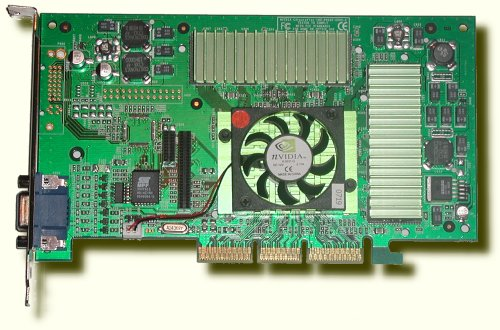
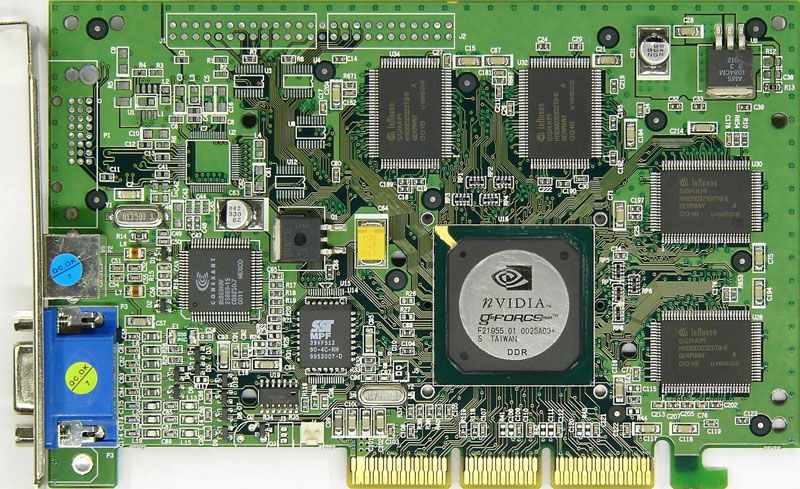
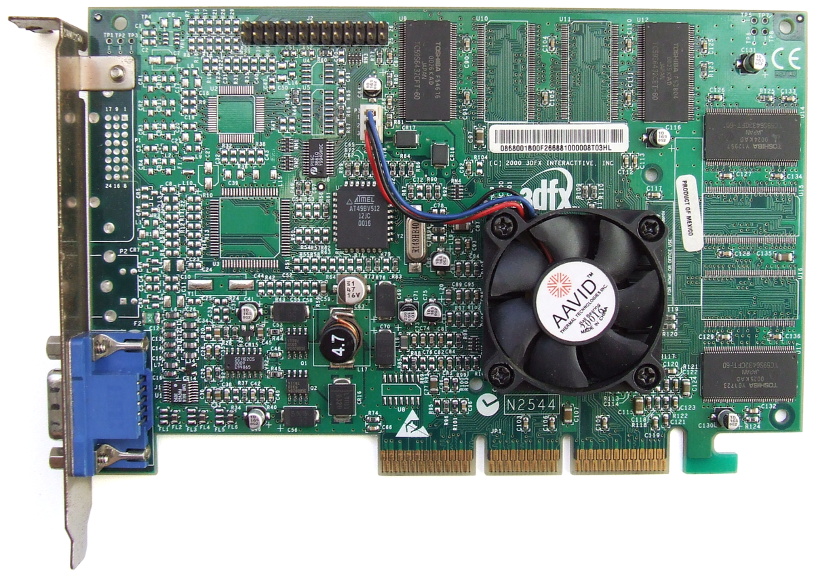
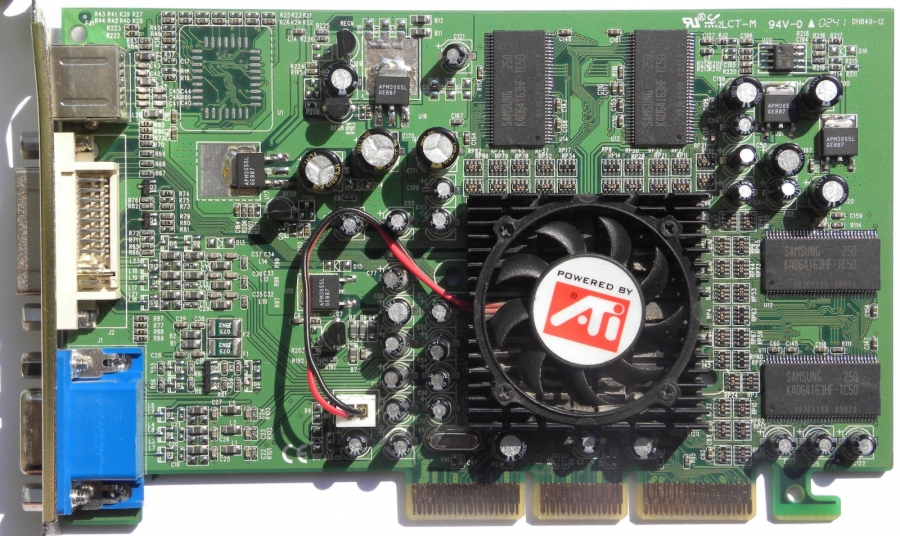
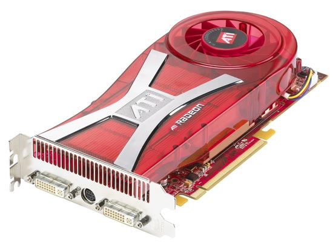

 La arquitectura GeForce 2 es similar a la línea GeForce 256 anterior pero con varias mejoras. En comparación con la GeForce 256 de 220 nm, GeForce 2 se basa en un proceso de fabricación de 180 nm, lo que hace que el silicio sea más denso y permite más transistores y una mayor velocidad de reloj. El cambio más significativo para la aceleración 3D es la adición de una segunda unidad de mapeo de textura a cada una de las tuberías de cuatro píxeles. Algunos dicen [¿quién?] La segunda TMU estaba allí en el Geforce NSR original (NVIDIA Shading Rasterizer) pero la textura dual se deshabilitó debido a un error de hardware; La capacidad única de NSR para hacer filtros de textura trilineales de ciclo único respalda esta sugerencia. Esto duplica la velocidad de relleno de textura por reloj en comparación con la generación anterior y es el razonamiento detrás del sufijo de nombres de GeForce 2 GTS: GigaTexel Shader (GTS). La GeForce 2 también presenta formalmente el NSR (Nvidia Shading Rasterizer), un tipo primitivo de canal de píxeles programable que es algo similar a los sombreadores de píxeles posteriores. Esta funcionalidad también está presente en GeForce 256 pero no se publicó. Otra mejora de hardware es un canal de procesamiento de video actualizado, llamado HDVP (procesador de video de alta definición). HDVP admite reproducción de video en movimiento con resoluciones HDTV (MP @ HL). [1] En pruebas de rendimiento y aplicaciones de juegos en 3D, la GeForce 2 GTS supera a su predecesora en hasta un 40%. [2] En los juegos OpenGL (como Quake III), la tarjeta supera a las tarjetas ATI Radeon DDR y 3dfx Voodoo 5 5500 en modos de visualización de 16 bpp y 32 bpp. Sin embargo, en los juegos Direct3D que ejecutan 32 bpp, el Radeon DDR a veces puede tomar la delantera. [3] La arquitectura GeForce 2 tiene bastante ancho de banda de memoria limitado. [4] La GPU desperdicia el ancho de banda de memoria y la tasa de relleno de píxeles debido al uso no optimizado del búfer z, el dibujo de superficies ocultas y un controlador RAM relativamente ineficiente. La principal competencia para GeForce 2, el ATI Radeon DDR, tiene funciones de hardware (llamadas HyperZ) que abordan estos problemas. [5] Debido a la naturaleza ineficiente de las GPU GeForce 2, no pudieron acercarse a su potencial de rendimiento teórico y el Radeon, incluso con su arquitectura 3D significativamente menos potente, ofreció una fuerte competencia. La posterior revisión de NV17 del diseño de NV11, utilizada para la GeForce 4 MX, fue más eficiente.
 La GeForce 256 fue la primera familia de productos de NVIDIA GeForce.1 Lanzada el 31 de agosto 1999, la GeForce 256 fue más allá de su predecesor RIVA TNT2 aumentando el número de pipelines, realizar cálculos de iluminación y la geometría (T&L) y la adición de características de compensación de movimiento en formato MPEG-2. Permitió un aumento considerable en el rendimiento en los juegos y fue el primer acelerador de gráficos poligonales compatible con el estándar de Direct3D 7. La GeForce 256 de nVidia definitivamente establecido como líder en el mercado y fue uno de los motivos de la decadencia de muchos competidores, especialmente 3dfx. Un año después de su lanzamiento, sólo la ATI Radeon con su familia continuó ofreciendo la competencia de NVIDIA. El nombre de GeForce 256 apareció en un concurso organizado por NVIDIA a principios de 1999. Conocido como "Name That Chip" (algo así como "nombre el procesador" en español), el concurso por invitación al público para bautizar el sucesor del procesador de línea de gráficos RIVA TNT2. Alrededor de 12.000 sugerencias recibidas y, como premio, siete personas recibieron tarjetas RIVA TNT2 Ultra. El éxito NVidia dio lugar a la caída de los competidores de 3dfx, Matrox y S3 Graphics, cuyos productos no eran competitivos con el nuevo procesador. Los productos de estas empresas, que incluyen procesadores como el 3dfx Voodoo3, Savage4 Matrox G400 S3 y eran compatibles con Direct3D API 6.
 El siguiente producto de la compañía recibió el nombre clave Napalm. Originalmente, se trataba de una evolución del Voodoo 3 que soportara nuevas tecnologías y mayores frecuencias de reloj, con un rendimiento cercano a la NVIDIA TNT2. Sin embargo, el proyecto se retrasó y dio tiempo a que NVIDIA sacara a la luz el chip GeForce, el cual supuso un gran avance. Napalm habría sido incapaz de competir con GeForce, por lo que fue rediseñado para soportar configuraciones con varios chips, al igual que el Voodoo 2. El producto final fue llamado VSA-100 (Voodoo Scalable Architecture). Los dos primeros modelos comercializados fueron la Voodoo 4 4500 (un chip) y la Voodoo 5 5000 (dos chips), a los cuales seguirían los modelos Voodoo 5 5500 y Voodoo 5 6000 (cuatro chips). Pero cuando las tarjetas basadas en el VSA-100 llegaron al mercado, la segunda generación de tarjetas GeForce ya estaba a la venta, ofreciendo un rendimiento substancialmente mayor. También por entonces, ATI comenzaba a distribuir la serie Radeon, en competencia con la serie GeForce 2. La Voodoo 5 5000 sólo aventajaba a sus competidores en la implementación de filtros antialiasing, al no perder demasiado rendimiento con estos activados. La Voodoo 4 4500 era barrida en casi todas las áreas por los modelos GeForce 2 MX y Radeon VE. Los modelos futuros nunca llegarían al mercado ya que, por un lado, la Voodoo 5 5500 no ofrecía la suficiente capacidad respecto a la competencia ni el suficiente ahorro de costes respecto a la Voodoo 5 5000; y por el otro, la Voodoo 5 6000 estaba aquejada de un grave bug que, en ciertas placas base, resultaba en la corrupción de datos, por lo que debía limitarse a AGP 2x. Voodoo 4 significó un desastre similar al de Voodoo Rush y, aunque las ventas de Voodoo 5 no fueron malas, se alejaban notablemente de los buenos tiempos de 3dfx. A finales del año 2000, varios inversores de 3dfx decidieron declarar la bancarrota. Ante la incapacidad de hacer frente a esto, 3dfx fue vendida a NVIDIA, dejando de existir como empresa.
 Radeon R100 es la primera generación de chips gráficos Radeon de ATI Technologies. La línea presenta aceleración 3D basada en Direct3D 7.0 y OpenGL 1.3, y todas las versiones, excepto las de nivel de entrada, descargan cálculos de geometría del host a un motor de iluminación y transformación de hardware (T&L), una mejora importante en características y rendimiento en comparación con el diseño anterior de Rage. Los procesadores también incluyen aceleración de GUI 2D, aceleración de video y múltiples salidas de pantalla. "R100" se refiere al nombre en clave de desarrollo de la GPU de la generación lanzada inicialmente. Es la base de una variedad de productos posteriores.
 La X1950 es una gráfica de gama alta para el mercado doméstico, por ahora la más potente de ATi y una de las que más entre todos las demás fabricantes. Se ofrecerá en dos versiones: la X1950 XTX y la X1950 Crossfire, la cual se podrá pinchar junto a otra en modo Crossfire (el similar al SLI en NVidia). La X1950 tiene 512 MB de memoria GDDR4 y el chip R580. Se espera que su precio sea realmente alto (superior a los 500 o 600 euros seguro), aunque ATi también ha presentado la X1900, un modelo con un potencial algo más bajo (pero todavía muy potente) y que se espera salga al mercado por unos 300 dólares
Desarrollador= Santiago Herbes